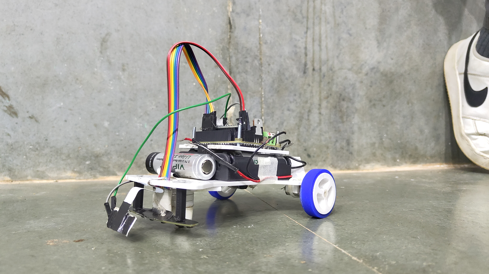
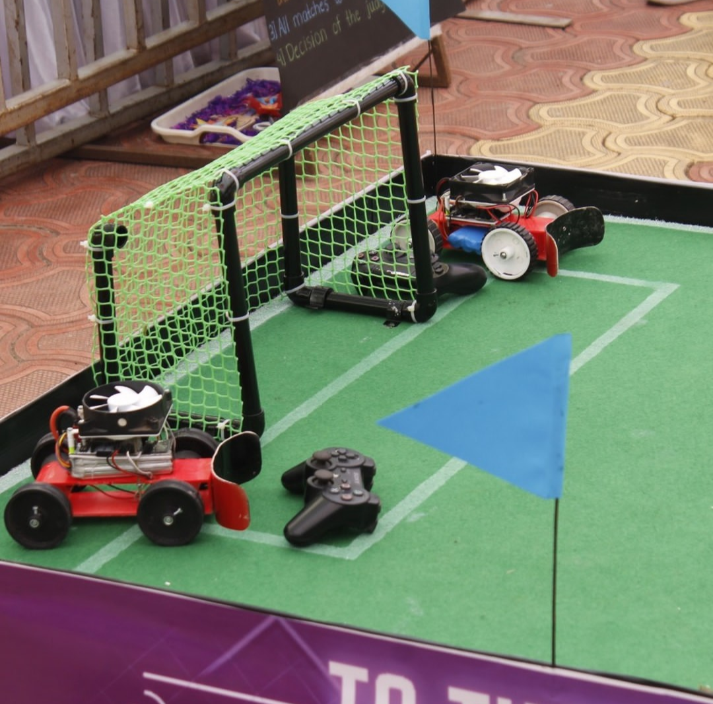
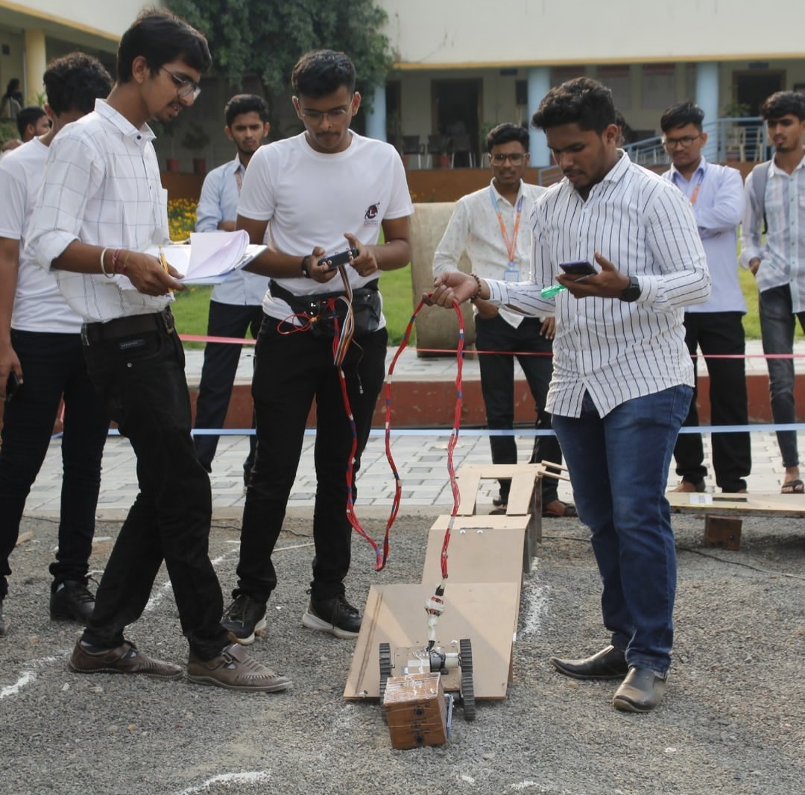

My Projects

March 2024 - August 2024
LF-4: Line Following Robot
Arduino-Nano Based Line Following Robot built using PID controller technology. This project was showcased at the Goa-Regionals competition.
Learn More

2023
Robo Soccer
Participated in the Robo Soccer competition at Impetus-2023, developing a robot capable of autonomous soccer gameplay.
Learn More

2023
Place Master
Led a cross-functional team in the development of a robotics project for the Place Master competition at Impetus-2023.
Learn More
January 2024 - Present
Extraterrestrial Biochemistry Models
Researching alternative biochemical pathways that could support life in extraterrestrial environments, focusing on silicon-based compounds.
Learn More